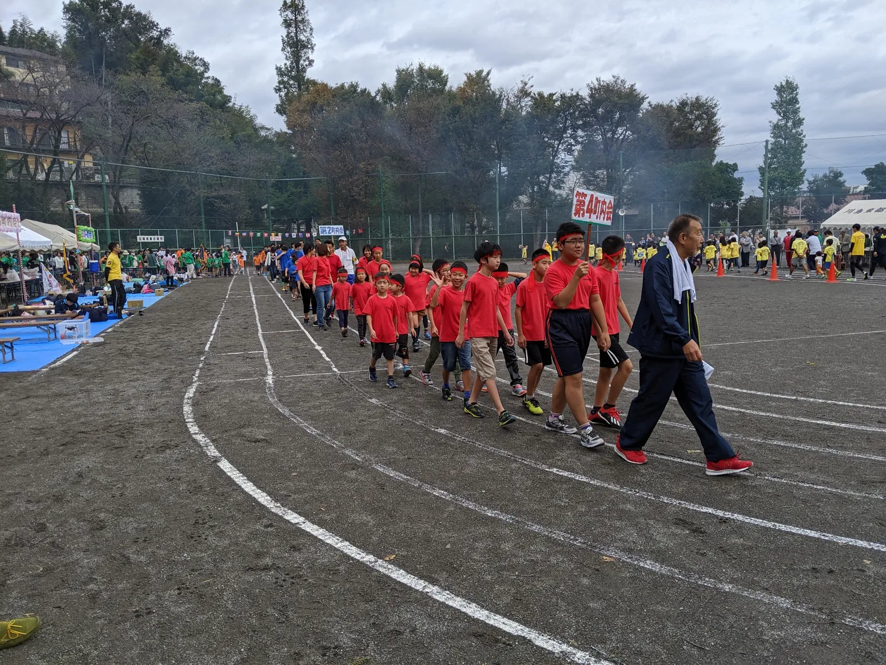
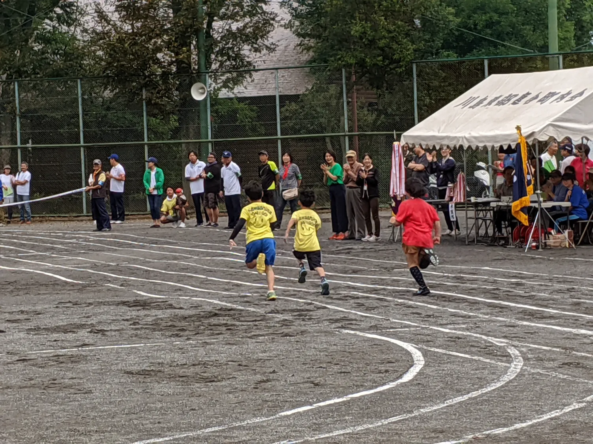
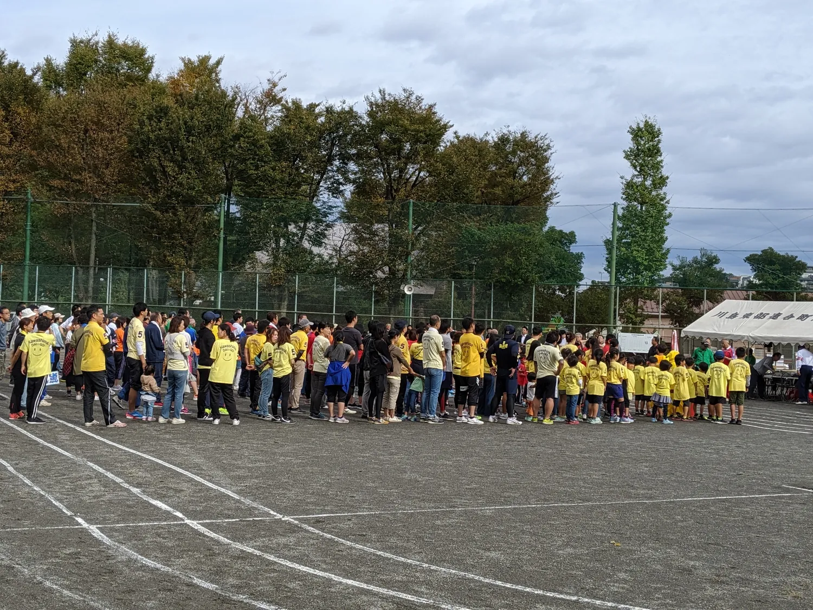
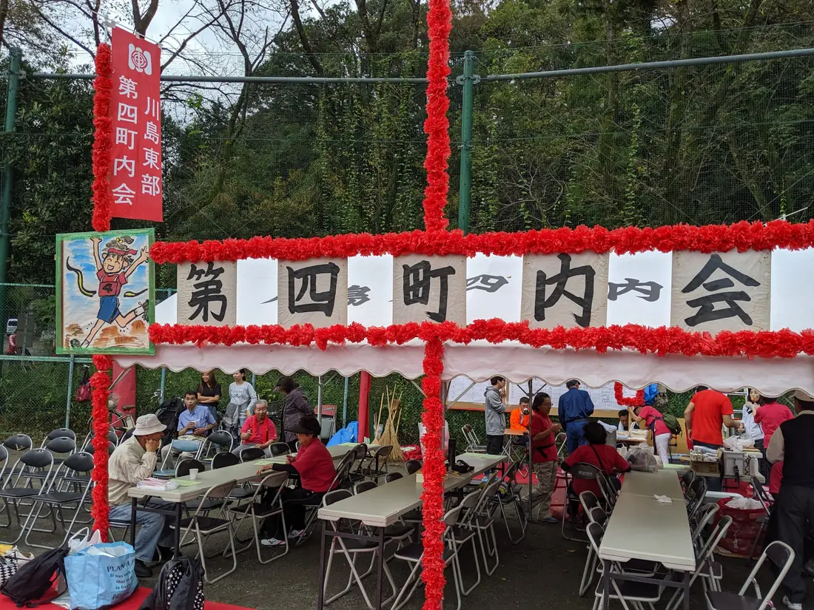
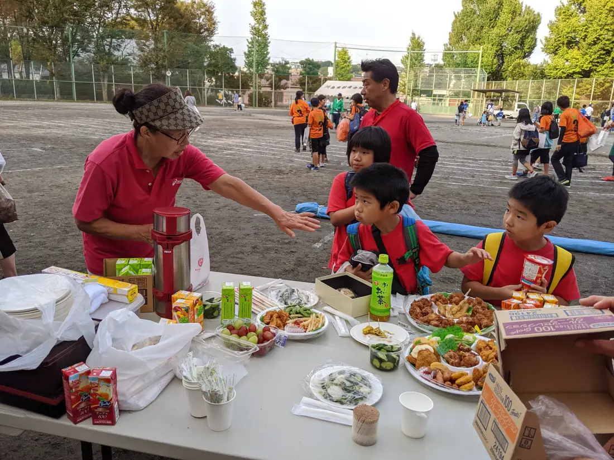

⚠️ 開催中止のお知らせ・2026年10月24日10/25（日）
10/25（日）
第53回 川島東部連合
大運動会は中止です
10月25日（日）に予定していた第53回川島東部連合大運動会は、天候と会場状況を踏まえ、参加される皆さまの安全を最優先に考えた結果、開催中止となりました。
中止判断の主な理由
- 参加者の安全確保
- 雨天後のグラウンドを現状復帰することが困難
- 会場・競技準備を十分に行うことが困難
- 25日午後からの降雨も見込まれ、予定どおりのプログラム編成が困難
参加や応援を予定してくださっていた皆さまには残念なお知らせとなりますが、安全な運営のための判断となります。ご理解のほど、よろしくお願いいたします。
開催中止10月25日（日）
第53回 川島東部連合大運動会
当日の開催はありません。お間違いのないようお願いいたします。
中止となった大会の概要
予定日2026年10月25日（日）
会場川島町公園
横浜市保土ケ谷区川島町825-1
横浜市保土ケ谷区川島町825-1
開催中止
お知らせ2026年10月24日に開催中止を決定
参考：予定していたプログラム
本大会は中止となりました。以下は中止決定前に予定していたプログラムです。記録・参考情報として掲載します。
| 開始 | No. | 競技種目 | 対象 |
|---|---|---|---|
| 8:55 | 1 | みんなで体操 | 全員 |
| 9:00 | 2 | ピンポンダッシュ | 各町内会役員・来賓 |
| 9:10 | 3 | サポーターズリレー | 消防団・青指・スポ推・子ども会・社協・会長等 |
| 9:20 | 4 | 小学生徒競走（1～3年）50m | 小学生 |
| 9:35 | 5 | グランドゴルフリレー | 60歳以上 |
| 9:50 | 6 | 樽ころがし | 大人男女 |
| 10:05 | － | 一斉休憩（10分） | － |
| 10:15 | 7 | 小学生徒競走（4～6年）100m | 小学生 |
| 10:30 | 8 | デカパンリレー | 中学生以上 |
| 10:45 | 9 | かりもの競争 | 小学生 |
| 11:10 | 10 | プレゼント走 | 未就学児 |
| 11:20 | 11 | 子ども綱引き | 小学生 |
| 11:35 | 12 | 一般男女徒競走 100m | 中学生以上 |
| 11:50～12:50 | － | 昼食タイム | － |
| 12:50 | 14 | 川島レスキュー | 大人＋子ども |
| 13:00 | 15 | 親子なかよく | 小学生＋一般 |
| 13:10 | 16 | ラケットリレー | 60歳以上 |
| 13:20 | 17 | フットボールリレー | 中学生以上 |
| 13:35 | 18 | パン食い競争 | 中学生以上＋子ども |
| 13:45 | 19 | 大人綱引き | 中学生以上 |
| 14:00 | 20 | 小学生男子リレー | 小学生 |
| 14:15 | 21 | 町内会対抗年齢別リレー | 中学生以上を含む |
| 14:40 | － | 閉会式（予定） | － |
※競技の進行状況により、開始時間が変動する場合があります。※車での来場はできません。会場外周道路への駐車・駐輪は禁止です。ゴミは各自でお持ち帰りください。
過去の連合運動会の様子
過去開催時（2019年）の写真です。今年の大会は中止となりましたが、これまでの地域行事の記録として掲載しています。





※写真は2019年の開催時に撮影した過去の様子です。